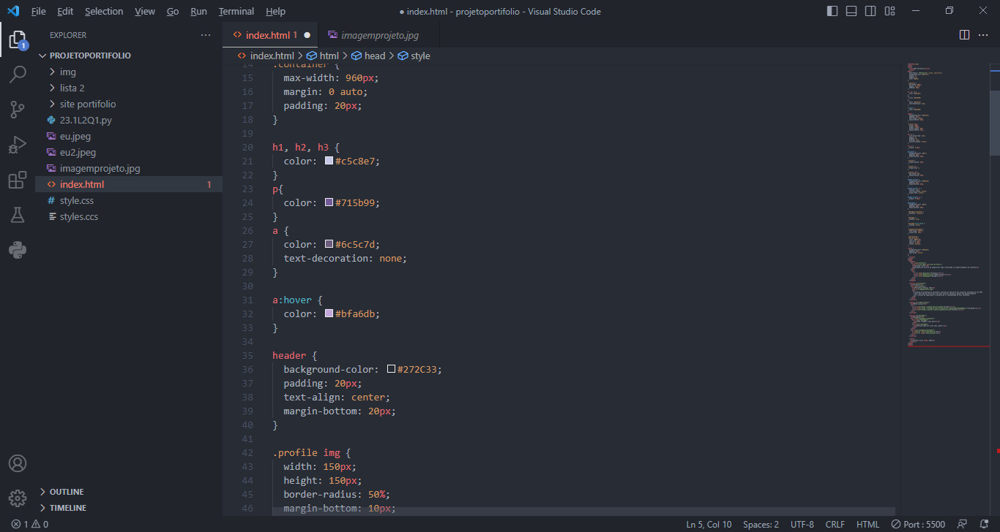

Estudante de Ciência da Computação/ Espaço destinado ao compartilhamento de projetos
Projetos
Portifólio Pessoal CIN

O projeto de protótipo do portifólio consiste na aplicação dos conceitos introdutorios de HTML
e CSS, bem como dos artifícios que tais recursos colocam a dispor dos desenvolvedores
com o intuito de impulsionar a assimilação e o aprendizado de tais conceitos.